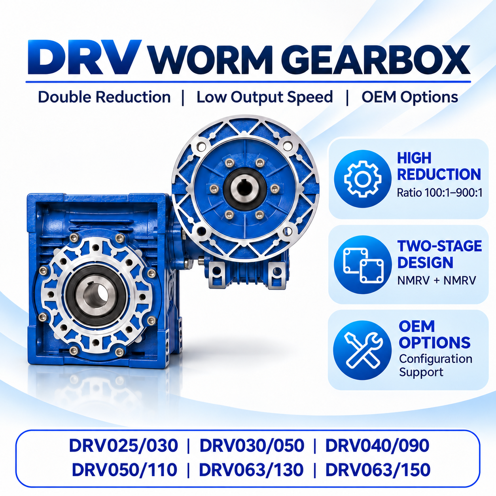

What DRV Gearbox Combinations Are Listed?
The supplied reference includes DRV025/030, DRV025/040, DRV030/040, DRV030/050, DRV030/063, DRV040/075, DRV040/090, DRV050/110, DRV063/130 and DRV063/150. For example, DRV030/063 represents an NMRV030 reducer combined with an NMRV063 reducer.
Before choosing a combination, review the DRV double worm gear motor product page, compare NMRV frame sizes, and confirm the intended mounting position.
Which Ratio Provides the Required Output Speed?
Total ratio = Input speed ÷ Output speed. At a 1,400 rpm input speed, the supplied reference gives the following approximate output speeds:
| Total ratio | Approximate output speed at 1,400 rpm input |
|---|---|
| 100:1 | 14 rpm |
| 150:1 | 9.3 rpm |
| 200:1 | 7 rpm |
| 250:1 | 5.6 rpm |
| 300:1 | 4.7 rpm |
| 400:1 | 3.5 rpm |
| 500:1 | 2.8 rpm |
| 600:1 | 2.3 rpm |
| 750:1 | 1.9 rpm |
| 900:1 | 1.6 rpm |
Actual operating speed can vary with the motor's rated speed, slip and load. Use the ratio and torque calculator for a preliminary check, then verify the final assembly with the applicable technical data.
How Do I Read the Selection Table?
Find the DRV model and motor-power row, then move across to the required total ratio. An entry such as 10 × 50 means two stage ratios of 10:1 and 50:1, producing 500:1 overall. A blank cell means that configuration is not listed in the supplied reference.
DRV Selection Example
For a target output speed of approximately 2.8 rpm with a 1,400 rpm input, the required total ratio is 500:1. The supplied reference lists DRV030/063 with a 0.12 kW motor and a 10 × 50 combination. Treat this as a preliminary option and confirm its rated output torque and suitability for the actual load.
Customized Double Reduction Worm Gear Reducers
For a customized double reduction worm gear reducer, provide required output speed, continuous and peak load torque, motor power and rated speed, shaft dimensions and mounting position. The application, daily operating hours, starts, shock load and order quantity also help confirm a practical configuration. A mounting drawing is useful for checking installation compatibility.
For selection fundamentals, see how to select a worm gear reducer and the worm gearbox service-factor guide.
Frequently Asked Questions
What is a DRV double reduction worm gearbox?
It combines two NMRV reducers to create a two-stage reduction drive for low output speeds.
What does 10 × 50 mean in a DRV selection table?
It means a 10:1 stage and a 50:1 stage, producing 500:1 total reduction.
Can a DRV gearbox be selected by output speed alone?
No. Output torque, load conditions, duty, motor details, mounting and dimensions must also be confirmed.
What should I send for a DRV configuration review?
Send application details, required output speed, load torque, motor specifications, shaft dimensions and mounting position.